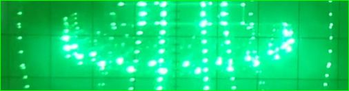

Engineering Portfolio
Instrumentation • Control Systems • Electronics • Software
Senior Electronics Engineer working on fusion technology, superconductor test rigs, and novel scientific instrumentation.
--- Website under construction ---
